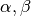

Theory and Methodology¶
- 1. Introduction
- 2. Criticality Calculations
- 3. Statistics
- 4. Geometry
- 5. Physics
- 5.1. Secondary Angles and Energy Distributions
- 5.2. Elastic Scattering
- 5.3. Inelastic Scattering
- 5.4.
 Reactions
Reactions - 5.5. Fission
- 5.6.
 and Other Disappearance Reactions
and Other Disappearance Reactions - 5.7. Survival Biasing
- 5.8. Effect of Thermal Motion on Cross-Sections
- 5.9. S() Tables
- 5.10. Unresolved Resonance Region Probability Tables
- 5.11. References
- 6. Tallies
- 7. Parallelization